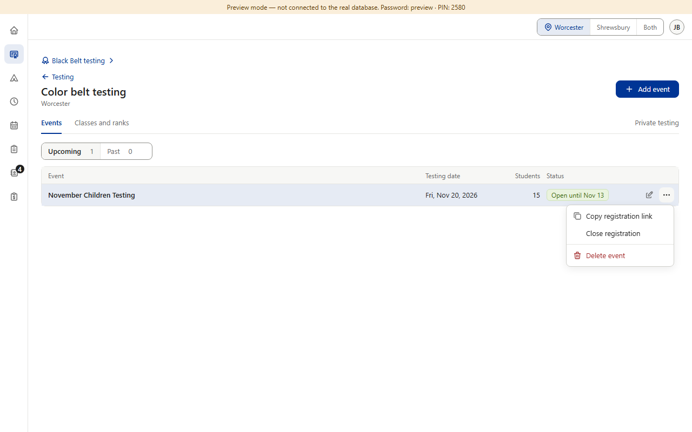
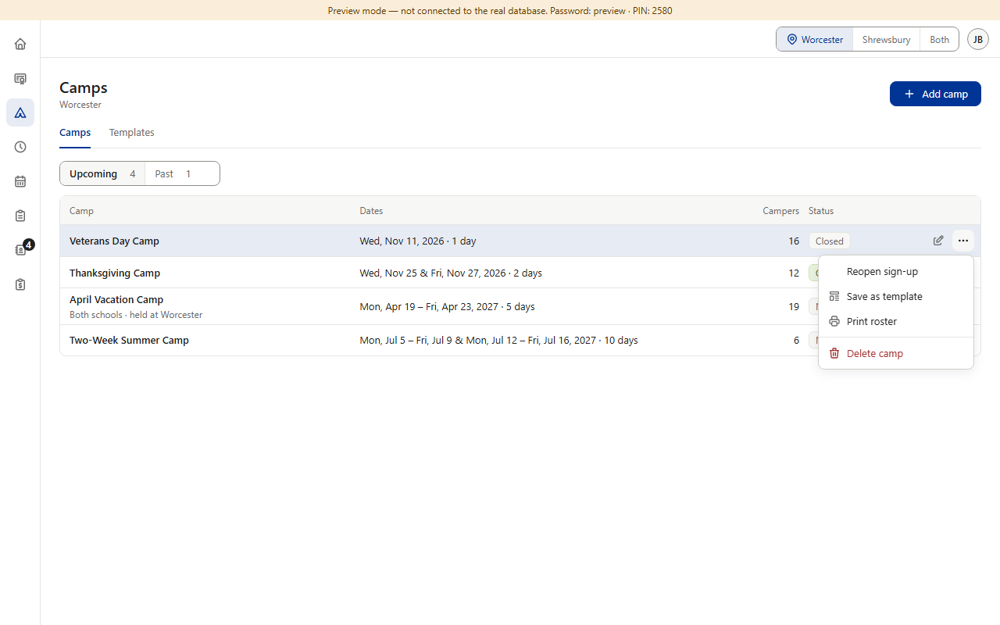
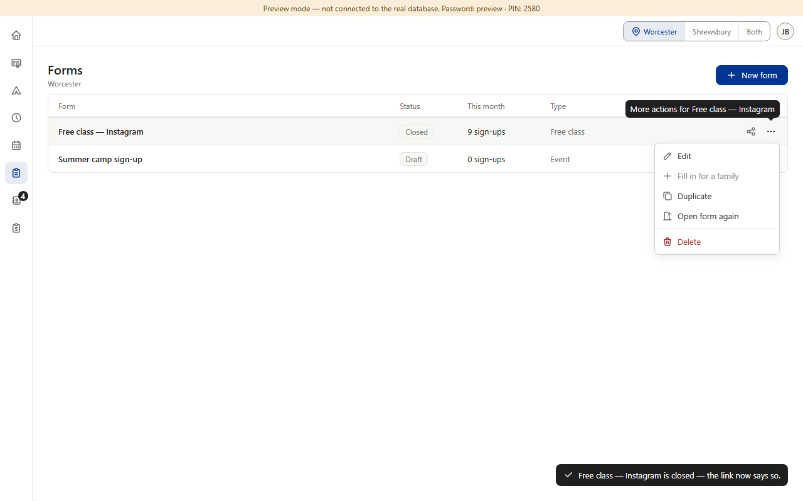
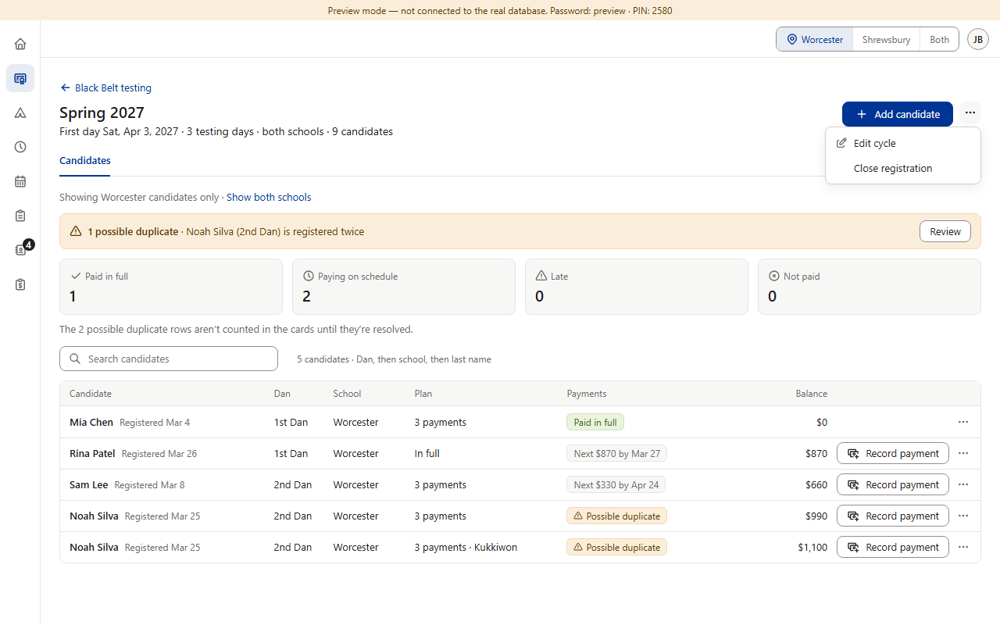
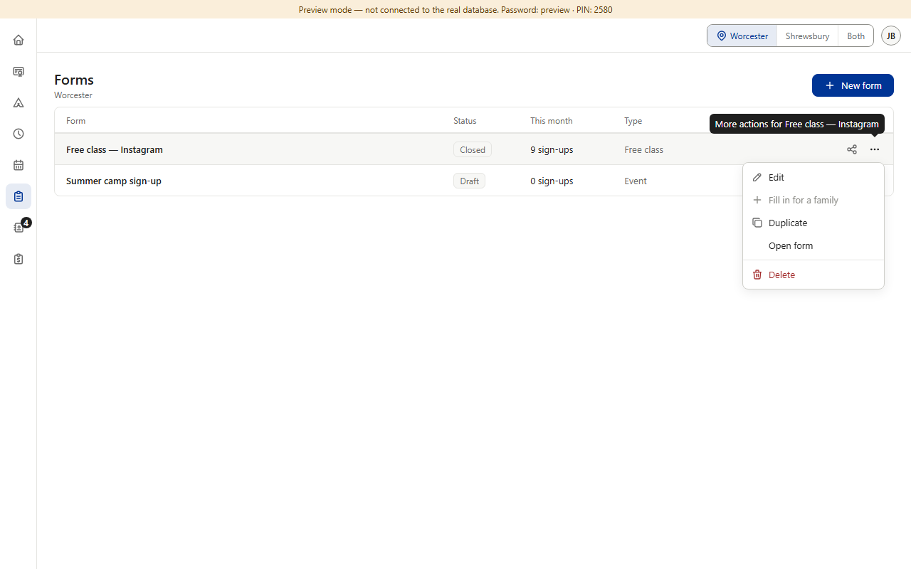

Today




Proposed (option B) · one verb pair, no icons


Copies what's already there: Color Belt's and Star's “Close … / Open …” with no icon. Each section keeps its own noun: registration (testing), sign-up (camps), form (Forms). Pictures 5–7 are drawn over the real menus; nothing in the app was changed.